| Game and Watch | |
|---|---|
 |
1980 Small, portable LCD games starring who is known today as Mr. Game and Watch. There have been 60 different variations of the Game & Watch system. |
| Gameboy | |
| 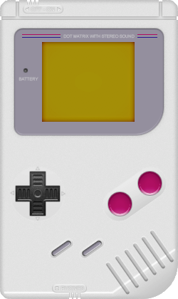 | 1989 The Game Boy was the first portable, interchangeable cartridge handheld by Nintendo. Games were 8-bit black-and-white, played on a green-tinted screen. The system had a red LED which showed the remaining power. It could last for over 30 hours on its required 4 AA batteries. |
| Virtual Boy | |
| 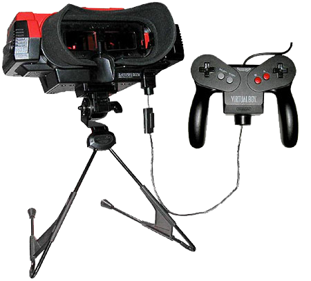 |
1995 The first Nintendo console with 3D graphics, the concept was to create a virtual reality experience. The system featured a pair of goggles to look into which sent a slightly different image to each eye, creating the 3D effect. The graphics could only be displayed in red and black. The system reportedly caused headaches and nausea, leading to low sales. It was discontinued less than a year after it was released. |
| Game Boy Pocket | 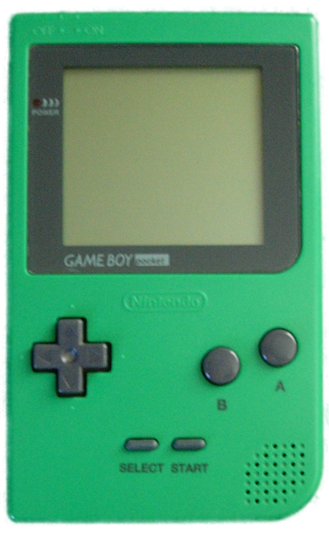 |
1996 Similar to the Game Boy except it is a more slimmed down version with a monochrome screen rather than the pea soup screen. It takes 2 AAA batteries and lasts for a little less time. The first releases of the Game Boy Pocket did not come with the red LED, as shown in the photo. Due to high demand, Nintendo added the LED to the system. |
| Game Boy Light |  |
1997 Native to Japan. Similar to the Game Boy Pocket except it featured a backlit screen for playing in the dark. It ran on two AA batteries. |
| Pokémon Pikachu | 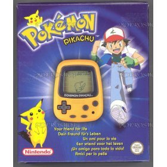 | 1998 The Pokémon Pikachu is a virtual pet toy and pedometer similar to a Tamagotchi. The player takes care of a virtual pet Pikachu. |
| Game Boy Color |  |
1998 Similar to the Game Boy, but with color graphics. It also had many technical enhancements, including a more powerful processor and an infrared wireless link-up port. This system was technically compared to the NES, except that the Game Boy Color has a larger color palette. There is no backlight on the screen. |
| Pokémon Pikachu 2 GS | 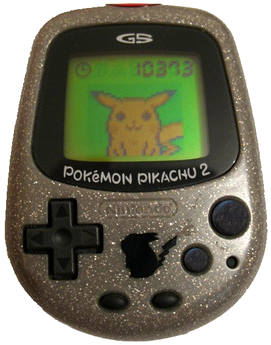 | 1999 The Pokémon Pikachu 2 GS is a virtual pet toy and the player doesn't have to take care of Pikachu. |
| Game Boy Advance | 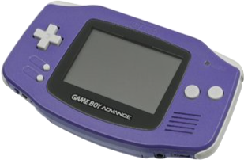 | 2001 The Game Boy Advance was a major improvement over the Game Boy Color with a new handheld shape, shoulder buttons and better graphics. It was technically compared to the Super Nintendo console, except that the Game Boy Advance's 16-bit sound is not as powerful as the console's. Some games remade from the Super Nintendo for the Game Boy Advance had to remix their soundtracks so they would work on the handheld system. This is clearly evident in the Donkey Kong Country series. |
| Pokémon Mini | 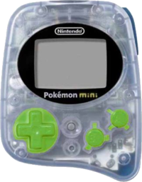 | 2001 The Pokemon Mini is a Nintendo handheld themed around Pokémon. Only 10 games were made for it. The Nintendo GameCube game, Pokémon Channel, features a Pokémon Mini emulator and six games. |
| Game Boy Advance SP | 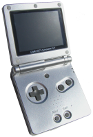 | 2003 The Game Boy Advance SP was the first Game Boy to have a clamshell design much like the Nintendo DS. The Game Boy Advance SP featured much better graphics and a front-lit screen which could be turned on or off (the model AGS-001). The newer model, AGS-101 features a backlit screen with adjustable brightness. The system's game compatibility is identical to the Game Boy Advance's. |
| Nintendo DS | 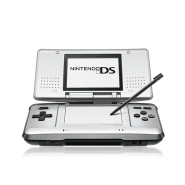 | 2004 The Nintendo DS featured two screens, the bottom one being a touch screen. The system also had enhanced graphics.It featured backwards compatibility with Game Boy Advance games and was often criticized for its chunky design. |
| Game Boy Micro | 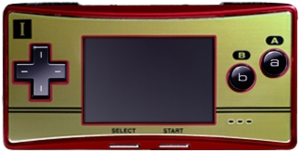 | 2005 Was the last Game Boy in the line and was the smallest handheld ever released. Featured a lack of backwards compatibility, only able to play Game Boy Advance games. The screen was about 2/3 the size of the original Game Boy Advance's. |
| Nintendo DS Lite | 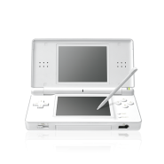 | 2006 This was the first redesign of the Nintendo DS line. It was a more slimmed down like Nintendo DS and featured a brighter screen. Backwards compatibility for Game Boy Advance games continued into the DS Lite. |
| Nintendo DSi | 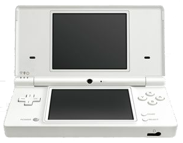 | 2008 The second redesign of the Nintendo DS line. It was the first Nintendo handheld to feature multimedia. It featured a 0.3 megapixel camera that you could have fun with by editing pictures etc. It also featured a music app where you could record your voice and then play around with it. You could also listen to actual music. Lastly it featured the shop app where you could download games etc. The backwards compatibility for Game Boy Advance games disappeared in this version of the DS. |
| Nintendo DSi XL | 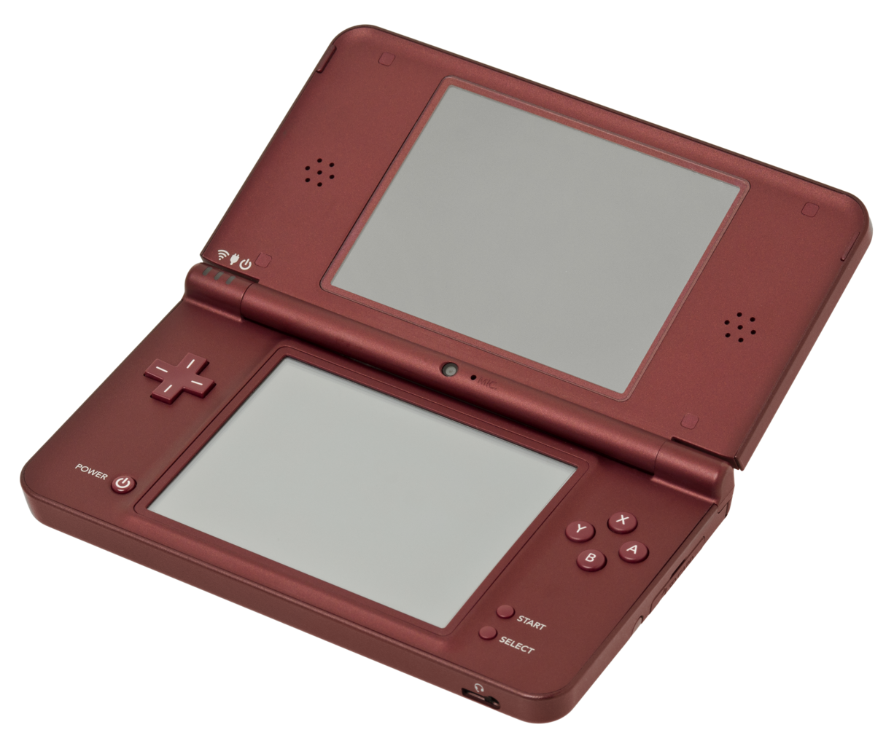 | 2010 This was the last redesign of the Nintendo DS line. It was the same as the Nintendo DSi except it featured a bigger and slimmer design with new 4.3" dual-screens. |
| Nintendo 3DS | 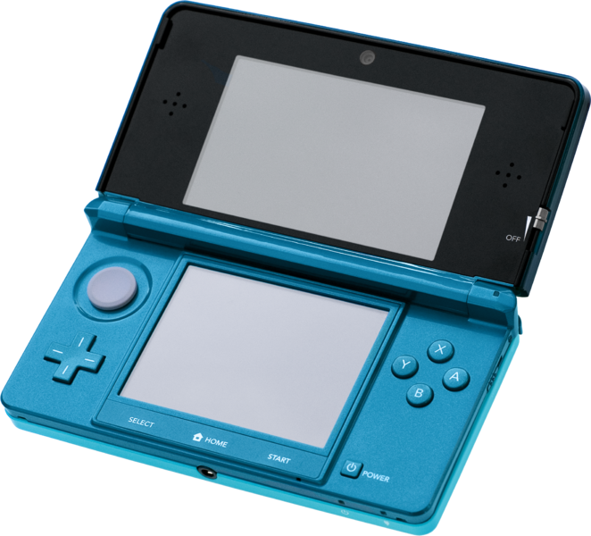 | 2011 The Nintendo 3DS can produce 3D graphics on the top screen without the need for glasses. It also includes a portable Mii Maker and Streetpass. It was also the first Nintendo handheld to feature a joystick. |
| Nintendo 3DS XL | 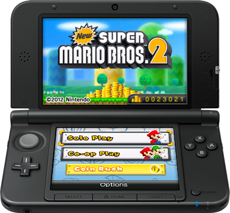 | 2012 In a similar manner to the Nintendo DSi XL. The 3DS XL was released on July 21, 2012 in Japan and on August 19, 2012 in the USA and other countries. The 3DS XL features even bigger 5" screens. |
| Nintendo 2DS | 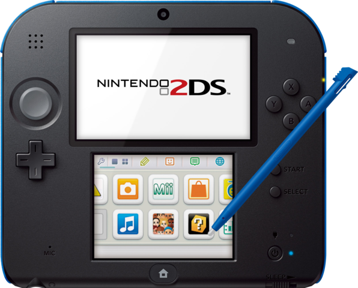 | 2013 The Nintendo 2DS is a redesign of the Nintendo 3DS, which uses mostly the same software, but differs in physical design. It features a more solid, tablet-like design as opposed to the Nintendo 3DS' clamshell design. |
| New Nintendo 3DS XL |  |
2014-2015 The New Nintendo 3DS XL is a bigger version of the New Nintendo 3DS. |
| New Nintendo 2DS XL | 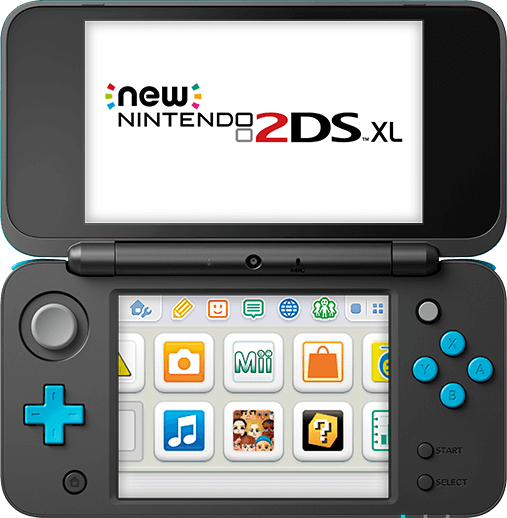 | 2017 The New Nintendo 2DS XL is a technologically-improved remodel of the 2DS handheld. The console is much larger than the original 2DS model |